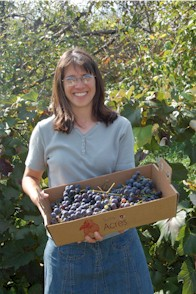

Petting Barn

Welcome to our Petting Barn! This is a wonderful opportunity for children and adults alike to get up close and personal with our friendly farm animals.
Our petting barn features over 8 acres of farm yard animals including goats, sheep, lambs, calves, chickens, ducks, rabbits, and more. All of our animals are gentle and used to being around people, making this a safe and enjoyable experience for visitors of all ages.
This is an excellent educational opportunity for schools and home-school groups. Children can learn about different farm animals, their habitats, what they eat, and how they contribute to farm life. We encourage questions and hands-on learning!
For School Groups: We offer special educational programs tailored to different age groups. Please call ahead to schedule your visit and discuss your specific educational needs. We can accommodate groups of up to 50 students.
Animal feed is available for purchase at the entrance to the petting barn. Please do not feed the animals anything other than the approved feed to ensure their health and safety.
Hours
- Monday - Friday: 9 am - 4 pm
- Saturday & Sunday: 11 am - 3 pm
- Closed on major holidays
Admission
- Adults: $4.00
- Children (3-12): $3.00
- Children under 3: Free
- School Groups (per student): $2.50
- Animal Feed: $1.00 per cup
Rules and Guidelines
- Children must be supervised by an adult at all times
- Please be gentle with all animals
- Wash hands before and after visiting the animals
- Only feed animals the approved feed purchased on-site
- Do not chase or startle the animals
- Stay in designated visitor areas